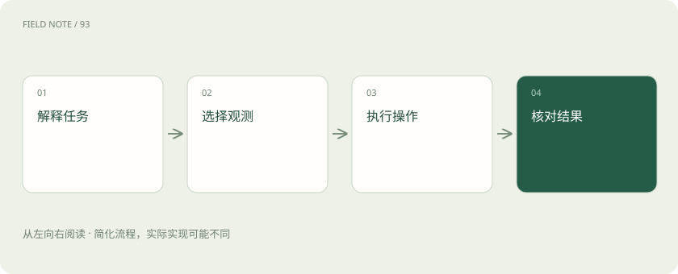
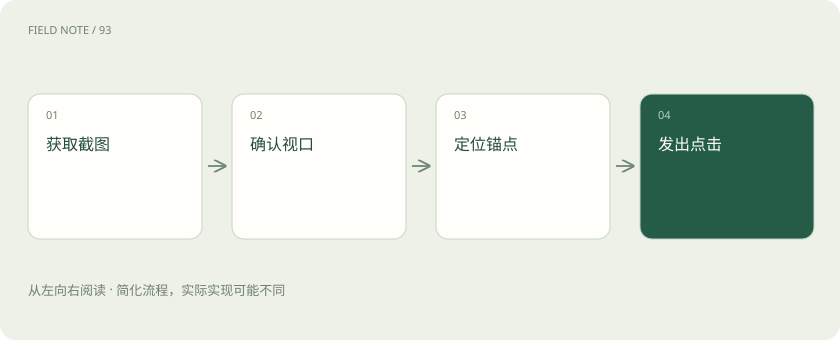
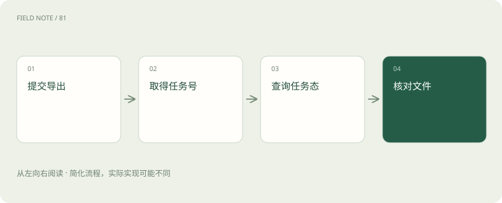

先说这篇在讲什么
你让助手下载一张发票，它顺利进入订单页，却停在电脑的保存窗口。问题可能不是它看不懂，而是它只有网页操作权。下面沿着查订单、找按钮、下载文件的过程，说明接口、网页结构和截图各能帮什么忙，以及怎样确认任务真的完成。
先看一个具体例子
订单工具返回导出任务号后，助手继续查到完成，再核对下载文件；保存窗口若超出控制权限，就交接给人。
遇到陌生概念，可以先读
展开前置阅读建议
打个比方，帮助理解
这是帮助理解的比方，实际过程以正文说明为准。
一图看懂

先看网页，再看电脑窗口
你让助手到订单网站下载发票。它打开订单、按下载按钮，随后电脑弹出文件保存窗口。网页这段能操作，保存窗口却未必能操作：两处需要不同工具权限。把自然语言要求变成网页动作的系统叫浏览器智能体；还能跨桌面应用和系统窗口工作的叫电脑智能体。判断能力时，要分别问它能看什么、能点什么。截图拍到了整个窗口，只能证明它看到了，不能证明它有键盘鼠标控制权。下载后的本地预览也可能超出网页工具范围，开始前应列出这些交接位置。
有订单接口时，直接问业务系统
假如订单系统提供“导出这笔订单发票”的正式入口，助手可以提交订单号，拿回任务编号，不必逐个寻找网页按钮。这类供程序调用的入口叫API。它返回订单、退款或导出任务等明确数据，通常比依赖页面布局更稳定。但拿到任务编号，只说明系统接受了工作。助手还要查询处理状态，直到文件可读取，才能说下载完成。接口也不会取消人工审批。选用权限清楚、可以追查记录的接口后，仍可通过页面核对用户实际看到的状态，防止两边更新不同步。
网页结构帮忙找对按钮
订单页面有十个“导出”按钮，助手需要找到订单甲那一行里的按钮，而不是屏幕上第一个同名按钮。网页内部把元素及其属性、上下级关系组织起来，这套结构叫DOM。工具可以据此按文字、标签或稳定属性找控件，不必猜坐标。页面刷新后，先前抓住的元素可能已被替换；定位器能在使用时重新寻找目标。即便结构中有按钮，也要检查它是否可见、被遮住或只是隐藏模板。如果整张图画在canvas画布中，结构可能只有一个画布节点，内部图标便需要其他观察方式。
图解：视觉动作前检查

按钮的名字和状态也有用
助手看到订单行旁边有个小图标，结构中的角色告诉它这是按钮，名称告诉它是“更多操作”，状态告诉它菜单尚未展开。这些提供给辅助技术的交互信息组成可访问树。它省略许多装饰内容，能帮助助手理解该怎么用页面，但不是完整网页的副本。页面作者若把两个图标都命名为“操作”，助手仍然无法只靠名字区分。此时要结合订单行文字、区域和截图核实。自定义控件若没有提供正确语义，也可能漏掉重要信息，因此树中的说明最终仍须与可见页面结果对照。
看图点击之前，先确认页面没动
有些按钮画在画布里，只能通过截图识别位置。助手看到“确认下载”在右下方，于是准备按该处坐标点击；这时通知条出现，页面整体移动，旧坐标就可能点中取消。截图和坐标操作覆盖了结构信息不足的界面，却依赖当时的窗口大小、缩放、视口和滚动位置。关键动作前应再次确认固定参照物，必要时重拍截图。文字识别可以辅助找标签，但小字、遮挡和低对比度都可能认错。点击之后还要读业务状态，鼠标确实落下不代表下载已经完成。
谁决定下一步，谁负责点下去
你说“找出未开发票的订单”，系统先解释筛选条件，再安排页面动作。Browser Use官方项目提供让模型使用浏览器的智能体能力；Playwright则提供定位、等待、断言等浏览器自动化基础能力。可以将前者理解为围绕目标选择动作的系统，将后者理解为执行确定操作的工具，但具体连接方法与支持范围要按实际版本文档确认。两者都不能自动替企业定义“未开票”：作废后需要重开的订单算不算，必须先说明。业务条件清楚，筛选框输入和结果检查才有依据。
固定流程、连接协议各有位置
每天下载同一种报表，可以先把固定步骤录成流程；遇到新要求，再由助手判断如何调用这段流程。预先配置规则和界面动作的方式通常叫RPA，它能与智能体组合使用。另一个常见名称MCP，指模型应用连接工具、资源等能力的协议。协议好比约定如何接线，并不是浏览器引擎。一个MCP服务可能只提供读订单，也可能提供网页操作，实际能力仍取决于实现和授权。排查问题时，要分清是谁做决定、采用什么连接约定、谁执行动作，以及业务系统最终处理了什么。
图解：业务接口完成判定

用不同页面试一遍，才能知道能做到哪
验收发票助手时，除了普通表单，还要试虚拟滚动表格、内嵌网页iframe、画布和系统文件框。为每一种界面分别记录能否看见、能否操作、能否确认结果，以及哪里需要人接手。这份能力覆盖表是工程建议，不是Browser Use或Playwright对成功率的承诺。还要单独演练登录过期和多因素验证。最终应交出正确订单集合、文件数量及未完成原因；网页说成功但目录中没有文件，就不能算完成。截图和动作记录方便复现，但含个人信息的记录应限定保存时间。
放在一起对比
| 维度 | 能力 | 边界 |
|---|---|---|
| API | 业务对象与契约 | 异步状态仍需核验 |
| DOM | 元素结构 | 画布内部可能不可见 |
| 可访问树 | 角色名称状态 | 取决于页面语义质量 |
| 截图 | 视觉布局 | 坐标依赖当前视口 |
读完先记住这一句
别踩这个误区
想一想
助手截图看到了保存文件窗口，能立即认定它可以完成保存吗？
不能。先查工具是否能给系统窗口输入，再验证保存后的文件确实存在且可读。
关联阅读
资料与边界
本文为原创知识讲解。类比和图示经过简化；示例数字不代表实测或报价。整理日期：2026-11-05。文末列出对应技术的原始资料，具体功能与版本支持请以原文为准。
按完整目录逐篇阅读